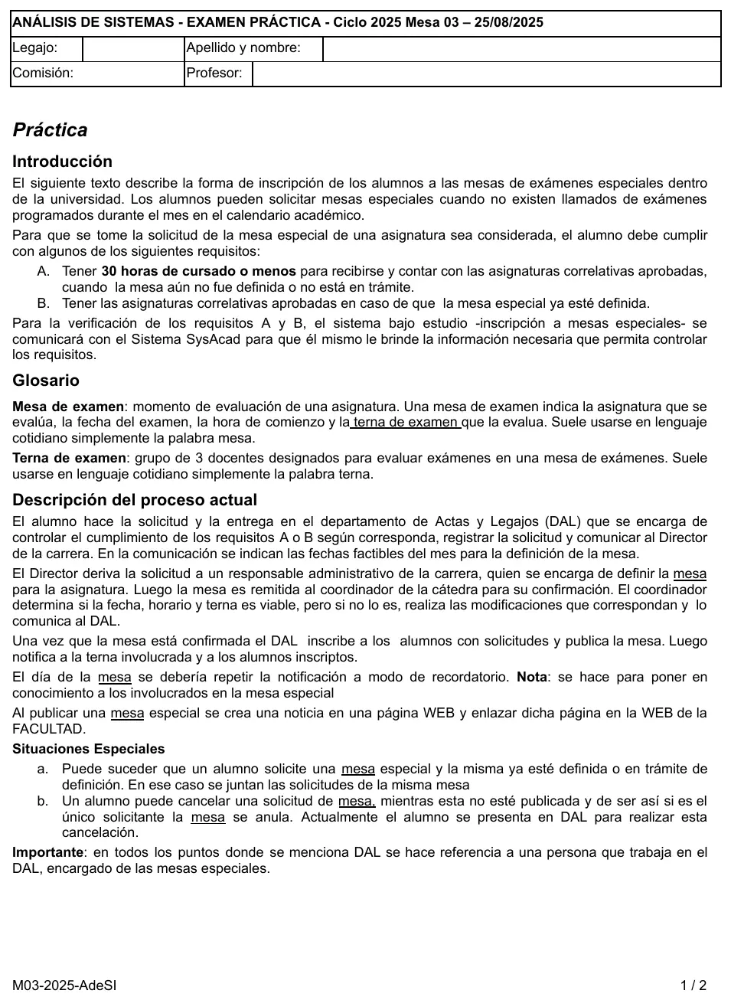
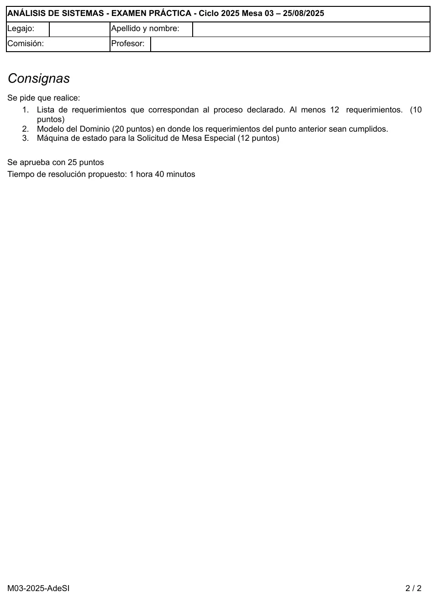

Final, 25/08/2025. Mesas especiales
Final, 25/08/2025
Enunciado




Propuesta de respuesta
Respuesta no verificada. La propuso Luta Studios con inteligencia artificial y ningún docente la revisó. Puede tener errores.
1. Lista de requerimientos
Con la forma acción + objeto(s) + (para qué) + (para quién) + (comentarios imprescindibles), como la lista resuelta del 1° parcial del 28/06/25, que usa el mismo caso.
| ID | Requerimiento |
|---|---|
R01 | Registrar solicitud de mesa especial de una asignatura presentada por el alumno, por parte del DAL |
R02 | Validar con SysAcad que el alumno tenga 30 horas de cursado o menos para recibirse y las correlativas aprobadas, cuando la mesa aún no fue definida ni está en trámite (requisito A) |
R03 | Validar con SysAcad que el alumno tenga las correlativas aprobadas, cuando la mesa especial ya está definida (requisito B) |
R04 | Validar que no haya llamados de exámenes programados en el mes en el calendario académico, al registrar la solicitud |
R05 | Asociar solicitud a la mesa especial de la misma asignatura que ya esté definida o en trámite, al registrarla |
R06 | Notificar solicitud registrada al Director de la carrera, con las fechas factibles del mes para definir la mesa |
R07 | Registrar derivación de la solicitud al responsable administrativo de la carrera, por parte del Director |
R08 | Registrar definición de la mesa especial con fecha, hora de comienzo y terna, por parte del responsable administrativo |
R09 | Registrar confirmación o modificación de fecha, horario y terna de la mesa, por parte del coordinador de la cátedra |
R10 | Registrar inscripción a la mesa de los alumnos con solicitudes, por parte del DAL |
R11 | Registrar publicación de la mesa especial y generar la noticia en la página web enlazada a la web de la facultad |
R12 | Notificar mesa publicada a la terna y a los alumnos inscriptos |
R13 | Notificar recordatorio de la mesa a la terna y a los alumnos inscriptos, el día de la mesa |
R14 | Registrar cancelación de la solicitud mientras la mesa no esté publicada, por parte del DAL |
R15 | Anular mesa especial cuando se cancela su única solicitud |
2. Modelo del dominio
Con el sufijo @ van los atributos que el relato no nombra pero hacen falta para identificar o avisar. Los datos de correlativas y horas de cursado no se guardan: los da SysAcad. Tocá el dibujo para verlo en pantalla completa.
| Requerimiento | Lo que lo sostiene |
|---|---|
| R01, R14 | Solicitud con fechaSolicitud, estado y fechaCancelacion |
R04 | LlamadoExamen |
| R05, R15 | Solicitud 1..* se junta en 0..1 MesaEspecial |
R06 | fechasFactibles y Carrera.mailDirector |
| R08, R09 | MesaEspecial con fecha, horaComienzo, su terna de 3 docentes y quien la define |
R11 | fechaPublicacion y urlNoticia |
| R12, R13 | mail de Alumno y Docente |
3. Máquina de estados de la Solicitud de mesa especial
Los estados en los que se puede cancelar van agrupados en un estado contenedor, como permite la regionalización. Tocá el dibujo para verlo en pantalla completa.
Respuesta no verificada. Puede tener errores.
Se armó con la página del 1° parcial (lista de requerimientos) y la del 2° parcial (modelo del dominio y máquina de estados, con guardas y regionalización). La forma de los requerimientos sigue la lista resuelta del 1° parcial del 28/06/25, que es del mismo caso.
Quedó en duda: El relato no dice cómo se identifica al alumno ni al director: van con @ como supuestos. No queda claro si la anulación de la mesa con la única solicitud es otro estado de la solicitud o solo de la mesa: acá queda en la mesa. La notificación de recordatorio podría ser un estado más después de publicada. El estado contenedor es opcional, se puede dibujar una transición a Cancelada desde cada estado.
¿Cómo te fue?
Marcá cada tema del examen.
- RequerimientosRequerimientos, en 1° parcial
- Modelo del dominioModelo del dominio, en 2° parcial
- Máquina de estadosMáquina de estados, en 2° parcial